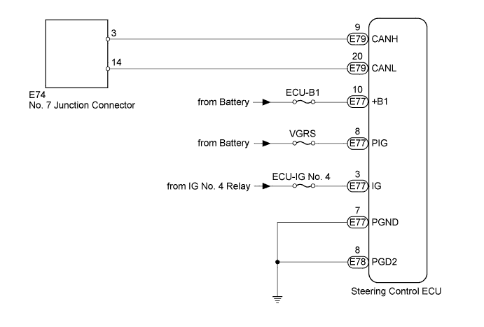
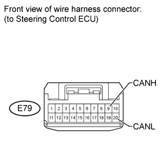
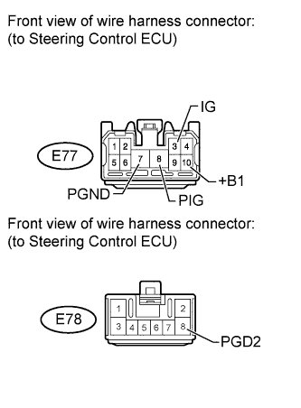

DTC U0130 Lost Communication with Steering Effort Control Module |
| DTC Code | DTC Detection Condition | Trouble Area |
| U0130 | There is no communication from the steering control ECU. |
|

| 1.DISCONNECT CABLE FROM NEGATIVE BATTERY TERMINAL |
Disconnect the cable from the negative (-) battery terminal before measuring the resistances of the main wire and the branch wire.
| NEXT | |
| 2.CHECK FOR OPEN IN CAN BUS WIRE (STEERING CONTROL ECU BRANCH WIRE) |
 |
Disconnect the E79 steering control ECU connector.
Measure the resistance according to the value(s) in the table below.
| Tester Connection | Switch Condition | Specified Condition |
| E79-9 (CANH) - E79-20 (CANL) | Engine switch off | 54 to 69 Ω |
|
| ||||
| OK | |
| 3.CHECK HARNESS AND CONNECTOR (STEERING CONTROL ECU - BATTERY AND BODY GROUND) |
 |
Connect the cable to the negative (-) battery terminal.
Disconnect the E77 and E78 steering control ECU connectors.
Measure the resistance according to the value(s) in the table below.
| Tester Connection | Condition | Specified Condition |
| E77-7 (PGND) - Body ground | Always | Below 1 Ω |
| E78-8 (PGD2) - Body ground |
Measure the voltage according to the value(s) in the table below.
| Tester Connection | Switch Condition | Specified Condition |
| E77-10 (+B1) - Body ground | Always | 11 to 14 V |
| E77-8 (PIG) - Body ground | ||
| E77-3 (IG) - Body ground | Engine switch on (IG) | 11 to 14 V |
|
| ||||
| OK | ||
| ||